About Me
I am a technology enthusiast, with a strong technical background in machine learning, math and programming, and the experience to bring these fields together to create useful real-life applications. Throughout my life, I have had the opportunity to develop proficient public speaking, teamwork, time management, and leadership skills. I take pleasure in overcoming challenges and being creative, dedicated, and proactive. I enjoy human relations and like getting involved in and helping to manage social activities.
Experience
|
|
Machine Learning Consultant & Data Scientist SEAT, S.A. · Full-time Sep 2017 - Present · +2 yrs Barcelona, Spain
Leading Machine Learning related tasks in projects related to future urban mobility:
- Mobility Advisor (presented in MWC 19 together with IBM) - Socially Responsible Navigation (presented in SCEWC 18 together with Waze and the city council of Barcelona) |
| 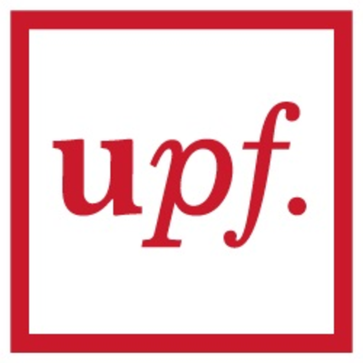 |
Teaching Assistant Pompeu Fabra University · Part-time Sep 2018 - Present · +1 yr Barcelona, Spain
Teaching laboratory sessions of "Introduction to Programming", 1st-year subject with Python.
|
| 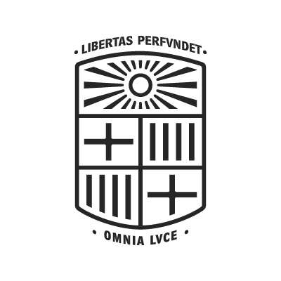 |
Teaching Assistant University of Barcelona · Part-time Jan 2017 - Sep 2017 · 9 mos Barcelona, Spain
Teaching laboratory sessions of Computer Engineering:
- Data Structures: 1st-year subject programming with C++ - Operating systems I: 2nd-year subject programming with C |
|
Research scholarship University of Barcelona · Full-time Sep 2016 - Jul 2017 · 11 mos Barcelona, Spain
Graduate Student Researcher at the CVUB group (http://www.ub.edu/cvub/) under the supervision of professor Petia Radeva: Deep Learning methodologies applied to Egocentric images.
|
|
|
BI Consultant Indra Sistemas, S.A. · Full-time May 2014 - Feb 2016 · 1 yr 10 mos Barcelona, Spain
Exploitation of Data Warehouse Commercial Segurcaixa, Vidacaixa: Gathering requirements, functional and technical definition, designing and developing ETL processes with SAP BO, PowerCenter, Oracle and Control-M.
|
Publications
| 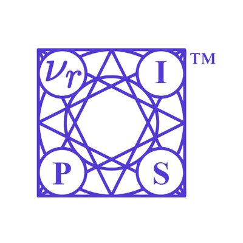 |
Recurrent Autoencoder with Skip Connections and Exogenous Variables for Traffic Forecasting Dec 2019 · Traffic4cast Challenge · NeurIPS 2019 Pedro Herruzo, Josep L. Larriba-Pey
The increasing complexity of mobility plus the growing population in cities, together with the importance of privacy when sharing data from vehicles or any device...
|
Paper Code |
| 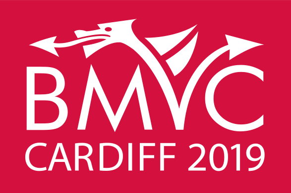 |
Towards Objective Description of Eating, Socializing and Sedentary Lifestyle Patterns in Egocentric Images Sep 2019 · BMVC 2019 Pedro Herruzo, Laura Portell, Alberto Soto, Beatriz Remeseiro
The objective description of lifestyle patterns from egocentric images captured by wearable cameras is considered the next step on health-tracking applications...
|
Code |
| 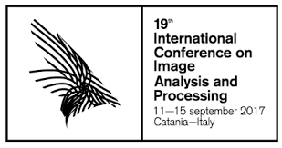 |
Analyzing First-Person Stories Based on Socializing, Eating and Sedentary Patterns Sep 2017 · ICIAP 2017 Pedro Herruzo, Laura Portell, Alberto Soto, Beatriz Remeseiro, Petia Radeva
First-person stories can be analyzed by means of egocentric pictures acquired throughout the whole active day with wearable cameras. This manuscript...
|
Paper Code |
| AIP |
Can a CNN recognize Catalan diet? Oct 2016 · AIP Conference Proceedings Pedro Herruzo, Marc Bolaños, Petia Radeva
Nowadays, we can find several diseases related to the unhealthy diet habits of the population, such as diabetes, obesity, anemia, bulimia, and anorexia. In many...
|
Paper |
Talks
|
Keeping Society Moving In A Connected World Sep 2019 · Cardiff, UK · British Machine Vision Conference
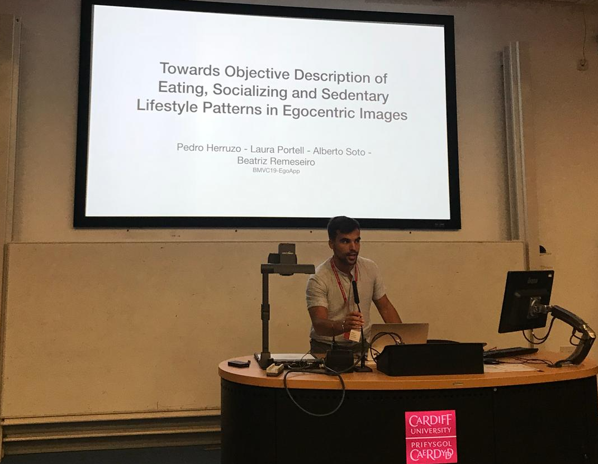
Giving the talk of our paper "Towards Objective Description of Eating, Socializing and Sedentary Lifestyle Patterns in Egocentric Images", accepted in BMVC 2019. |
|
Keeping Society Moving In A Connected World Feb 2019 · Barcelona · 4YFN, side event of the Mobile World Congress with Avichai Bakst, Director of Business Development at Waze |
|
Socially Responsible Navigation Nov 2018 · Barcelona · Smart City Expo World Congress with Luca de Meo, presindent of SEAT, S.A., and Jordi Caus, head of future urban concepts
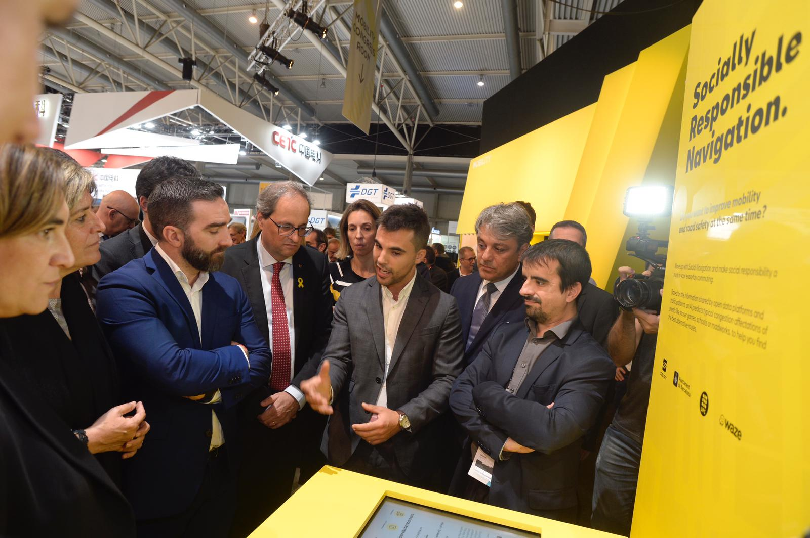
In picture, 1) from SEAT S.A.: i) Luca de Meo (president), ii) Jordi Caus (head of future urban concepts), iii) myself explaining the project of my thesis in SEAT S.A., and UPC. 2) from the city council of Barcelona: i) Roger Torrent (president of the Parliament of Catalonia), ii) Quim Torra (president of the Government of Catalonia), iii) Ada Colau (mayor of the city of Barcelona). You can find more information about it in news [fleetnews, SEAT, S.A.], and a visual explanation in the following YouTube video: |
|
Socially Responsible Navigation Nov 2018 · Barcelona · Smart City Expo World Congress
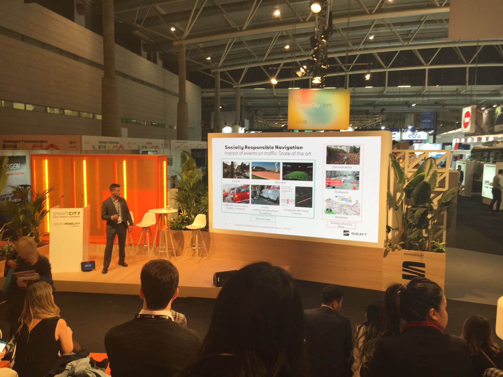
Giving the talk of the project, a collaboration of SEAT S.A., Waze, the city council of Barcelona and the Polytechnic University of Catalonia. |
|
Big Data Talent Awards for the best master thesis Nov 2018 · Big Data & AI Congress Barcelona Congress with Laura Portell and Alberto Soto
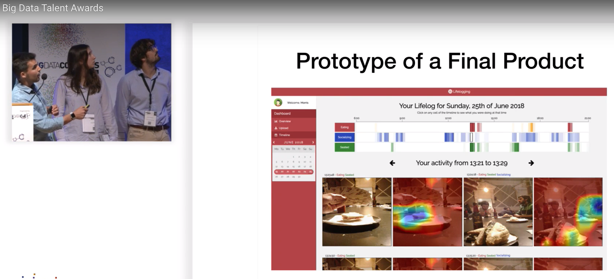
This congress named our work the best master thesis out of all presented manuscripts. The live presentation can be found in the following link to YouTube (spanish): |
|
Barcelona towards a data-driven City: When data is the key infrastructure Oct 2018 · Barcelona · Open Data Barcelona
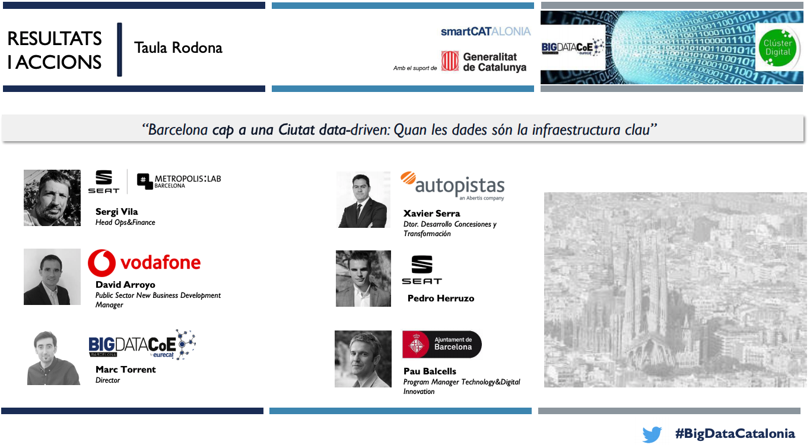
In this round-table, I was defending the importance of public-private cooperation in order to improve urban mobility through a common data-layer in the city called Open Data. Link to the slides. |
|
SEAT S.A. from a Car Manufacturer to a Mobility provider Nov 2017 · Barcelona · IOT Solutions World Congress with Josep L. Larriba-Pey, Co Founder of Sparsity Technologies
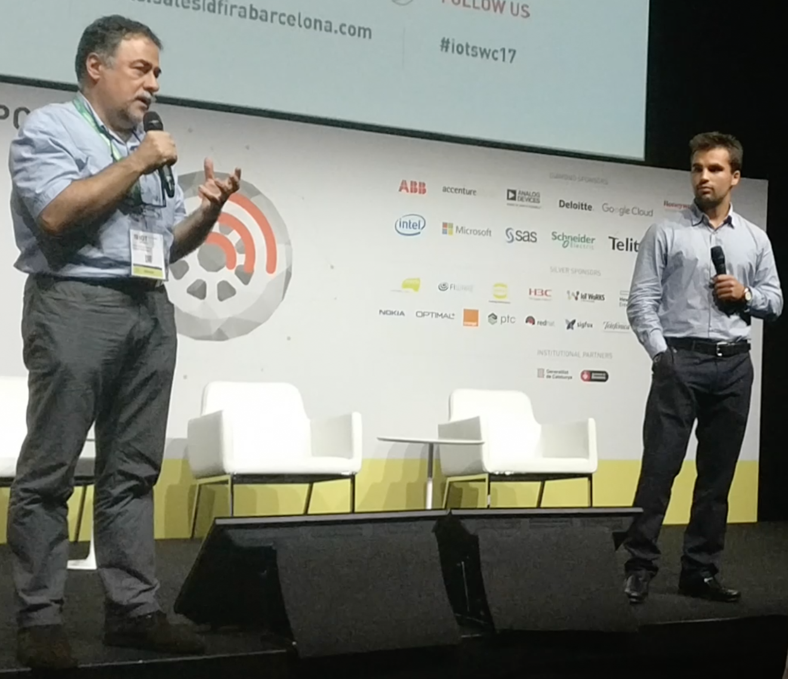
In this talk, I was explaining relevant projects in SEAT S.A. in the transition from being only a car manufacturer towards a mobility provider. Link to related news. |
Awards
|
Outstanding contribution in the Traffic4cast competition Dec 2019 · Vancouver, Canada by the Institute of Advanced Research in Artificial Intelligence (IARAI), in NeurIPS 2019 conference
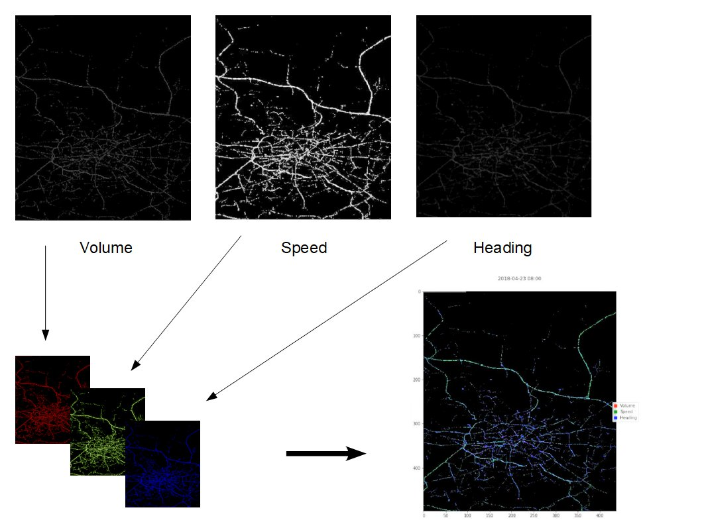
Traffic4cast is a challenge inside the NeurIPS 2019 conference organized by IARAI. The objective is about predicting traffic states (average speed, number of vehicles, and main traffic direction) in three different cities: Moscow, Istanbul, and Berlin with data provided by Here. Three best scores in the leaderboard got a cash prize, but the jury also selected only 4 more projects they believe had an outstanding contribution, with a reward of a free entrance to NeurIPS 2019 conference, and the publication of an extended abstract. This is what we won. Links: |
|
3th position in the Climate Change Challenge Nov 2019 · Barcelona, Spain by the University of Barcelona, ISGlobal, and Ajuntament de Barcelona
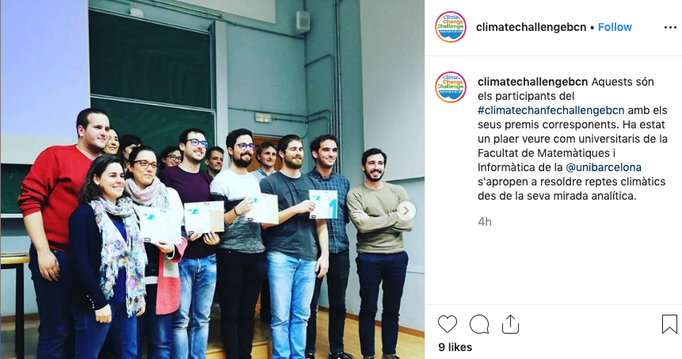
The objective of this challenge is to model the weather in the city of Barcelona in the best possible way. Using temperature, precipitation, humidity and other variables in a set of 4 stations in the city, we were asked to predict the real average temperature in the city, together with the best location for extra stations that could benefit the measurements in real life. We also presented different creative use cases that could benefit from installing the proposed physical stations. Link to the website and instagram of the challenge. |
|
1st position in the Big Data Talent Awards for the best master thesis Nov 2018 · Barcelona, Spain by the Big Data & AI Congress Barcelona
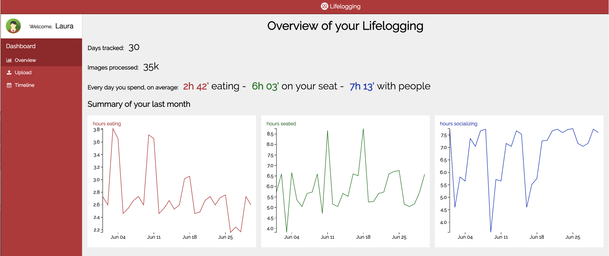
This congress named our work the best master thesis out of all presented manuscripts. In our work, we took one step further in the direction of self-quantify lifestyle patterns, analyzing first-person stories by means of egocentric pictures acquired throughout the whole active day with wearable cameras. Our work use AI in order to quantify when a person is socializing with other people or alone, when is sitting or standing, or when she or he is buying grocery, cooking, eating or neither of that. We introduce the first prototype of a website where the user can upload the pictures of the whole day and get a dashboard with these measurements. Links: |
|
Project recognition in the "Ideas contest for startups", group category. Nov 2016 · Barcelona, Spain by DKV Seguros Health4Good
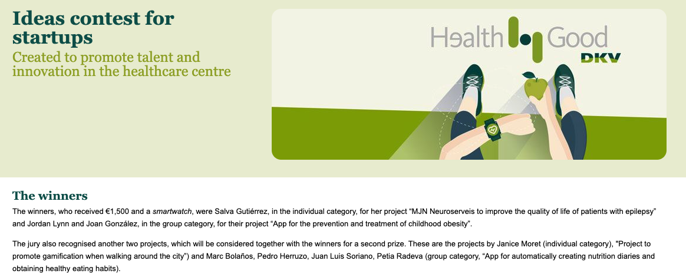
We participated in a very demanding contest for startup ideas, and we got recognized together with the winners for a second prize. We presented an App that can create nutrition diaries automatically from only pictures, and propose healthy eating habits from it. Links to related news [1], [2], and [3]. |
Education
|
Polytechnic University of Catalonia Doctor of Philosophy - PhD · Artificial Intelligence and Smart Mobility 2017 - 2020 |
|
|
Kenyatta University Summer School · Deep Learning Indaba 2019 2019 - 2019
Strengthen African Machine Learning
|
|
|
University of Barcelona Master of Science - MS · Fundamental Principles of Data Science 2016 - 2017
Machine Learning, Deep Learning, Bayesian Statistics, Optimization, Numerical Linear Algebra, Complex Networks, Probabilistic Graphical Models...
|
|
| 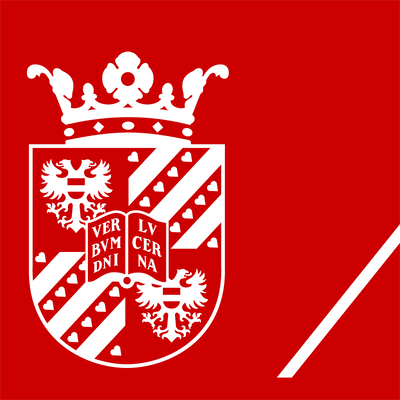 |
University of Groningen Bachelor of Science - BS · Mathematics and Computer Science 2016 - 2016
Neural Networks, Computer Graphics, Algebraic Structures, and Geometry and Topology. Bachelor thesis with title: Can a CNN recognize Mediterranean food?
|
|
University of Barcelona Bachelor of Science - BS · Mathematics 2010 - 2016 |
|
|
University of Barcelona Bachelor of Engineering - BE · Computer Engineering 2010 - 2016 |
|
|
University of Barcelona Bachelor of Business Administration - BBA · Business Administration and Management 2008 - 2010 |
Languages
|
Catalan Native or bilingual proficiency |
|
English Full professional proficiency |
|
Spanish Native or bilingual proficiency |
Skills
|
Data Science |
|
Interpersonal Skills Communication Management Social Skills Strategy |
|
Deep Learning frameworks Caffe, Keras, PyTorch |
|
Machine Learning Computer Vision Deep Neural Networks Explainable Deep Learning Graph Neural Networks Recommender Systems Recurrent Neural Networks |
|
Development C, C++, C#, Java, Matlab, Python, R |
|
Web CSS, HTML, Javascript |